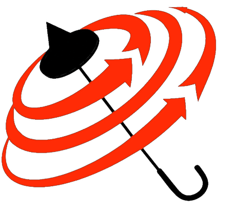

Quantitative MRI mOOCB1 Mapping · Exercise 4-6
Exercise 4-6
B1 maps are expected to be smooth, slowly varying fields, but measurements have flaws.
Can you identify some in each map? What might their cause be?
Click any image to enlarge it. DA is a slice through the ventricles; AFI and BS are one slice higher up.
Exercise 4-6
Sensitive to long T1, e.g. CSF in the ventricles: it hasn’t recovered between shots (T1 ≈ 4 s ≈ TR), so B1 reads too low there.
Sensitive to Gibbs ringing / truncation: ringing from sharp edges (scalp, skull) runs into the brain as streaks.
Sensitive to phase artefacts, e.g. fringe lines and phase poles, where the phase can’t be unwrapped cleanly. More on phase in the B0 chapter (next week, or in the mOOC).
Exercise 4-6 · quiz
A 3 × 3 window N(r) of a B1 map. What does the centre pixel become?
| 1.01 | 0.98 | 1.03 |
| 0.99 | 1.62 | 1.00 |
| 1.02 | 0.97 | 1.01 |
Exercise 4-6 · which filter?
A 1D B1 profile through the brain. Which filter would you use on it?
Red circles: voxels more than 2 % off the true B1. Play to watch the window slide along the profile.
Exercise 4-6 · your filters
The same slice, three methods. Pick a filter and a size for each map, to make the three agree as closely as possible.
Spread between the three maps
Filters work inside the brain only. Size = window width in pixels; Gaussian σ = size / 4. DA here is the chapter’s TSE double angle, on the same slice as AFI and BS.
Exercise 4-6 · (a)
You are given B1 mapping data that is very sensitive to the motion of blood in the vessels: you see bright spots in the B1 maps. The researcher doesn’t need accurate B1 inside these regions, but would like to filter the maps in the brain tissue.
Measured B1
Filtered
Error in tissue
rms error in the tissue (vessels not scored)
Without a mask, which filter should you use, and how wide? Why?
Exercise 4-6 · (b)
Measured B1 (orange: masked)
Filtered
Error in tissue
rms error in the tissue (vessels not scored)
How would you create a mask for the vessels? With a mask, which filter should you use? Why?
Exercise 4-6 · Summary